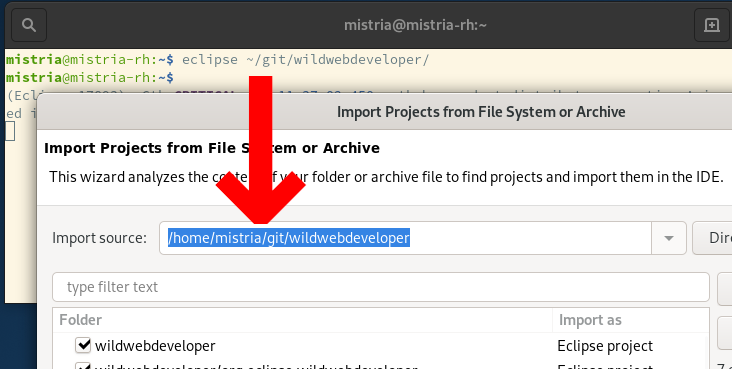
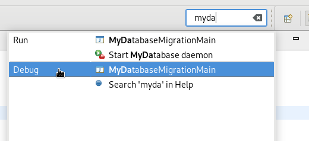
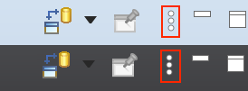
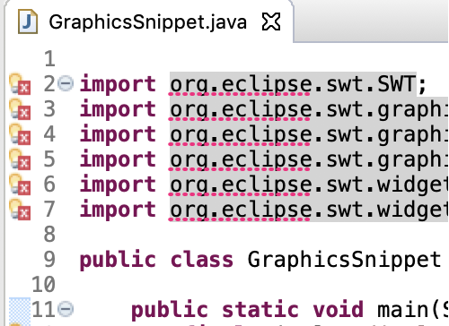
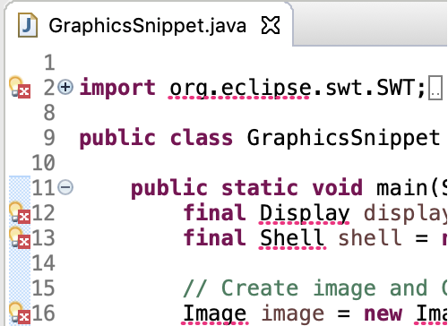
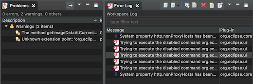

Here are descriptions of some of the more interesting or significant changes made to the Eclipse Platform for the 4.12 release of Eclipse. They are grouped into:
Plug-in developers will also be interested in the corresponding What's new document in the plug-in developer's guide.
We also recommend to read the Tips and Tricks.
Views, Dialogs and Wizards |
|
| Import project by passing it as command-line argument |
You can import a project into Eclipse by passing its path as a parameter to the launcher.
The command would look like eclipse /path/to/project on Linux and Windows, or
open Eclipse.app -a /path/to/project on macOS.
 |
| Launch Run and Debug configurations from Quick Access |
From the Quick Access proposals (accessible with Ctrl+3 shortcut) you can now
directly launch any of the Run or Debug configurations available in your workspace.

Note: For performance reasons, the extra Quick Access entries are only visible if the |
Themes and Styling |
|
| Improved View Menu Icon |
The icon used for the view menu has been improved. It is now crisp on high
resolution displays and also looks much better in the dark theme.
Compare the old version at the top and the new version at the bottom:  |
| High resolution images drawn on Mac |
On Mac, images and text are now drawn in high resolution during GC operations.
You can see crisp images on high resolution displays in the editor rulers, forms, etc in Eclipse.
Compare the old version at the top and the new version at the bottom:   |
| Table/Tree background lines shown in dark theme on Mac |
In dark theme on Mac, the Table and Trees in Eclipse now show the alternating dark lines
in the background when setLinesVisible(true) is set.
Earlier they had a gray background even if line visibility was true.
Example of a Tree and Table in Eclipse with alternating dark lines in the background:  |
Equinox |
|
| Support activating bundles in parallel |
When the Equinox OSGi Framework is launched the installed bundles are activated
according to their configured start-level. The bundles with lower start-levels are
activated first. Bundles within the same start-level are activated sequentially from
a single thread.
A new configuration option The default is |